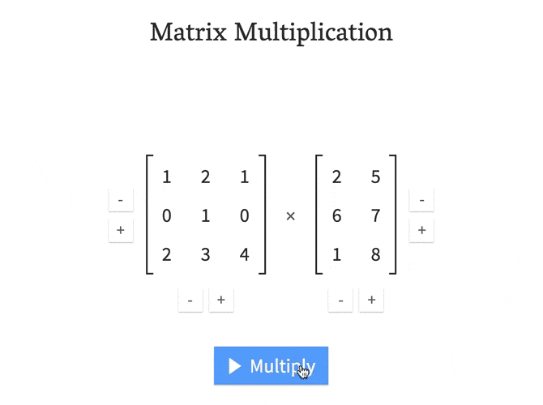

Key Points
- Basic Logic of R Language
- Simple Algebra
- Linear Algebra
Elementary Algebra
Four Basic Operations
1 + 2; 1.5 + 2.4## [1] 3## [1] 3.93 - 4; -6 - 7## [1] -1## [1] -135 * 6; 23 * 14## [1] 30## [1] 3227 / 8; -9 / 0.2## [1] 0.875## [1] -45; in R is used to connect two independent command
lines.
Based on the above command, please solve the following question:
\[\frac{\frac{365}{12}}{\frac{28 + 24}{10} - (36 + 72) \times 5}\]
(365 / 12) / ((28 + 24)/10 - (36 + 72) * 5)Complex Algebra
sqrt(9)## [1] 310^2## [1] 1005%%3 #remainder## [1] 2log(11)## [1] 2.397895log10(100)## [1] 2exp(12)## [1] 162754.8even trigonometric functions:
sin(pi)## [1] 1.224606e-16cos(pi)## [1] -1tan(pi/2)## [1] 1.633124e+16acos(1)## [1] 0asin(1)## [1] 1.570796atan(0.5)## [1] 0.4636476Scientific Notation
tan(pi/2)## [1] 1.633124e+16A number is written as a real number a multiplied by 10 to the power of n. Here, E (exponential) is used to represent the power of 10. Here are some examples:
\[200 = 2e + 2, \] \[0.002 = 2e-3,\] \[333.3 = 3.333e + 2,\] \[-45,000 = -4.5e + 4.\]
What does 2.8e + 10 represent?
format(2.8e+10, scientific = FALSE, big.mark = ',')Boolean Algebra
- The foundation is logical judgment: use
TRUEto represent true,FALSEto represent false, and you can also useTandFas abbreviations. - Common operators:
- Not(
!), equal to (==), not equal to (!=), greater than (>), less than (<), and (&), or (|) - Of course, composite operators such as greater than or equal to
(
>=) and less than or equal to (<=) can also be derived.
- Not(
Here are some examples:
1 == 2## [1] FALSE1 != 2## [1] TRUE1 > 2## [1] FALSE1 < 2## [1] TRUE1 >= 2## [1] FALSE1 <= 2## [1] TRUE1 & 2 > 2## [1] FALSE1 | 2 > 2## [1] TRUEWhat is the result of the following formula?
3 > 2 > 1(3 > 2) & (2 > 1)Many students who are new to programming languages may feel uncomfortable using double equal signs (
==) to represent “equals”. However, from a conceptual perspective, it can be viewed as a member of==, !=, >=, <=.
Vectors
In R, vectors are also the most basic way of representing data.
- In mathematics, a vector is a sequence of numbers with direction, or
a sequence of numbers used to record a directional action.
- If the direction is removed, it becomes a scalar.
- In terms of data, creating a vector is equivalent to creating a variable.
In this sense, variables can be viewed as “conceptually meaningful vectors”.
Vector Representation
- Mathematics: \({\displaystyle {\vec
{a}}=(11, 12, 13, 14, 15)}\)
- \(\vec {a}_2 = 2; \vec {a}_5 = 5\)
- R：
a <- c(11, 12, 13, 14, 15)c: Concatenate/combine
a <- c(11, 12, 13, 14, 15)
a[2]## [1] 12a[5]## [1] 15<-: assign::a <- 1:5TRUEmeans keep something,FALSEmeans don’t keep something
b <- 10 * 1:5
b## [1] 10 20 30 40 50# How about the result?
c(1.5:3)## [1] 1.5 2.5How to express \(\vec {b}=(1, 3, 4, 5, 6, 7, 9)\)?
b <- c(1, 3:7, 9)seq()seq()
Repeat the above example:
a <- seq(from = 1, to = 5)
a## [1] 1 2 3 4 5The convenience of seq() is that the step size can be
defined:
c <- seq(from = 1, to = 5, by = 3)
c
#d <- seq(from = 1, to = 5, by = 0.5)
#dAnother function of seq() is to reflect the position of
the element.
For example: how to select the even number item of d
Hint: Determine the index → Find out whether each bit in the index is an even number (whether it can be divisible by 2), it is marked with
TRUE→ On the basis of the second step, according to the rule of “TRUE,FALSEis not reserved”, the elements with even numbers in the vector are reserved as a new vector.
d[seq(d) %% 2 == 0]Four arithmetic operations of vector
- Addition and subtraction: \[\vec{a} \pm \vec{b} = (a_1 \pm b_1, a_2 \pm b_2, ..., a_n \pm b_n).\]
- Multiplication is slightly more complicated and has different types.
- Dot multiplication: There are two ways of expression
- Algebraic expression: \(\vec{a}\cdot
\vec{b} = \sum a_ib_i\)。
- This includes a special case, scalar × vector: \(c\vec{x} = (cx_1, cx_2,..., cx_n).\)
- Geometric expression: \(\vec{a}\cdot \vec{b} = ||\vec{a}||||\vec{b}||cos\theta\)，Where \(||\vec{a}||\) is the Euclidean norm of a vector (\(\sqrt{a^{2}_1 + \ldots + a^{2}_n}\)), θis the angle between two vectors.
- Dot product: connect two vectors with
*in R to output the dot product result.
- Algebraic expression: \(\vec{a}\cdot
\vec{b} = \sum a_ib_i\)。
- Cross product: a method of multiplying two variables on a common
unit vector.
- Connect two vectors using
%o%or use theouter()command to calculate.
- Connect two vectors using
- Dot multiplication: There are two ways of expression
a + b## [1] 11 22 33 44 55a - b## [1] -9 -18 -27 -36 -45a * b## [1] 10 40 90 160 250a / b## [1] 0.1 0.1 0.1 0.1 0.1When the vectors used for calculation are of unequal length, the elements of the shorter vector will be cycled through in sequence, as shown in the following example:
a## [1] 1 2 3 4 5e <- c(1, 2)
a * e## [1] 1 4 3 8 5Cross-product in R can actually be used for more than just manipulating data.
For example, this functionality can be used to calculate the combination of the ten Heavenly Stems and twelve Earthly Branches in Chinese astrology using R.
tiangan <- c("甲", "乙", "丙", "丁", "戊", "己", "庚", "辛", "壬", "癸")
dizhi <- c("子", "丑", "寅", "卯", "辰", "巳", "午", "未", "申", "酉", "戌", "亥")Note: As you all know, there are ten Heavenly Stems and twelve Earthly Branches in Chinese astrology. There are a total of 120 combinations, but our ancestors selected 60 of them to form the basis of the Chinese zodiac. The selection method is to pair odd numbers with odd numbers and even numbers with even numbers.
tg_yang <- tiangan[seq(tiangan) %% 2 == 1]
tg_yin <- tiangan[seq(tiangan) %% 2 == 0]
dz_yang <- dizhi[seq(dizhi) %% 2 == 1]
dz_yin <- dizhi[seq(dizhi) %% 2 == 0]
outer(tg_yang, dz_yang, FUN = paste0)
outer(tg_yin, dz_yin, FUN = paste0)Properties of Vectors
a## [1] 1 2 3 4 5#length
length(a)## [1] 5#best value
max(a)## [1] 5min(a)## [1] 1#average value
mean(a)## [1] 3#median
median(a)## [1] 3#variance
var(a)## [1] 2.5These commands can be used commonly in subsequent data-based variable operations.
Matrix
- math:
\[ A_{2\times2} = \left(\begin{array}{cc} 1 & 3\\ 2 & 4 \end{array}\right) \]
- R：
A <- matrix(1:4, nrow = 2)
A## [,1] [,2]
## [1,] 1 3
## [2,] 2 4- Mathematics: In the matrix \(A_{2\times2}\), its elements are usually marked in the form of row×column, for example, \(A_{12}\) represents the element of matrix 1row and 2column , which is \(3\). -R:
A[1, 2]## [1] 3A[1, ]## [1] 1 3A[ , 2]## [1] 3 4Single Matrix Operations
B <- matrix(1:6, nrow = 3)
B## [,1] [,2]
## [1,] 1 4
## [2,] 2 5
## [3,] 3 6dim(B)## [1] 3 2t(B)## [,1] [,2] [,3]
## [1,] 1 2 3
## [2,] 4 5 6t(t(B))## [,1] [,2]
## [1,] 1 4
## [2,] 2 5
## [3,] 3 6
t(t(B))is a nested approach.
Matrix Operations
- Addition (Subtraction): It can only be performed between matrices of the same shape (same number of rows and columns), where \(A \pm B = a_{ij} \pm b_{ij}\).
- Multiplication: Scalar product, general product, Hadamard product,
Kronecker product, etc. Here, we will only introduce the scalar product
and general product, which are more relevant to later data processing.
- Scalar Product: \({\displaystyle (rA)_{ij}=r\cdot a_{ij}\ }\), same as algebraic multiplication.
- General Product: It is defined only when the number of columns in the first matrix is equal to the number of rows in the second matrix. The operation involves taking the algebraic product of corresponding elements from the respective columns and rows, as shown in the diagram below, 。
In R, you can perform this operation by using
%*%to concatenate two vectors that meet the defined properties.
B## [,1] [,2]
## [1,] 1 4
## [2,] 2 5
## [3,] 3 6C <- matrix(7:12, nrow = 3)
B + C## [,1] [,2]
## [1,] 8 14
## [2,] 10 16
## [3,] 12 18B - C## [,1] [,2]
## [1,] -6 -6
## [2,] -6 -6
## [3,] -6 -610 * B## [,1] [,2]
## [1,] 10 40
## [2,] 20 50
## [3,] 30 60D <- matrix(1:6, nrow = 2)
D## [,1] [,2] [,3]
## [1,] 1 3 5
## [2,] 2 4 6dim(B)## [1] 3 2dim(D)## [1] 2 3B %*% D## [,1] [,2] [,3]
## [1,] 9 19 29
## [2,] 12 26 40
## [3,] 15 33 51System of Equations
Use R to solve a system of three linear equations:
\[ \begin{equation} \begin{cases} x + y + z = 6, \\ 3x + 2y + 4z = 9, \\ 2x + 2y - 6z = 4. \end{cases} \end{equation} \]
- Matrix E represents the coefficients of the equations.
- \(b\) is the right-hand side of the equations.
- \(x\) is the solution to the equations.
\[ \begin{align} \vec{b} =& \vec{E}\vec{x},\\ \begin{bmatrix} 6 \\ 9 \\ 4 \end{bmatrix} =& \begin{bmatrix} 1 & 1 & 1 \\ 3 & 2 & 4 \\ 2 & 2 & -6 \end{bmatrix} \begin{bmatrix} x \\ y \\ z \end{bmatrix} \end{align}. \]
E <- matrix(c(1, 3, 2, 1, 2, 2, 1, 4, -6), nrow = 3)
E## [,1] [,2] [,3]
## [1,] 1 1 1
## [2,] 3 2 4
## [3,] 2 2 -6b <- c(6, 9, 4)
x <- solve(E, b)
x## [1] -5 10 1One direct application of solving systems of equations is to solve regression equations.
Regression equations can typically be expressed in terms of linear algebra.
For example, a basic regression equation can be written in the following form, which is very similar to the system of equations we solved above:
\[ \begin{align} y& =& &\beta_0 + \beta_1x_1 + \beta_2x_2 + ... + \beta_nx_n + \epsilon\\ \vec{y}& =& &\vec{x}\vec{\beta} + \vec{\epsilon}.\\ \uparrow& & &\uparrow\uparrow\\ \vec{b}& =& &\vec{E}\vec{x} \end{align} \]
Summary
- Basic Algebra
- Scientific Notation
- Boolean Algebra:
!、==、!=、>、<、&、|、>=、<=
- Linear Algebra
- Vectors:
<- - Matrices:
%*% - Systems of Equations
- Vectors: